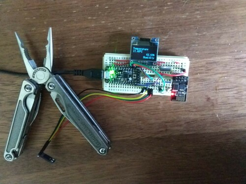
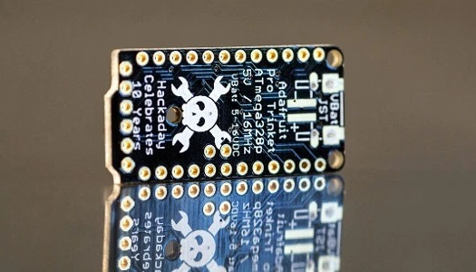
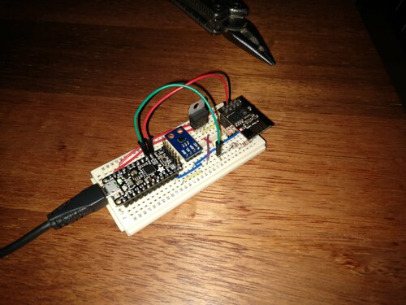

temp0
{kind=link}
Summary
This project combined a handful of small project ideas:
- Make a device that monitored and reported the inside temperature at home.
- Learn how to use an ESP8266 chip.
- Put to use (and potentially showcase) a Hackaday 10-year anniversary special-edition Pro-Trinket module that has sat un-used for about 6 years.
- Try out the arduino platform instead of natively programming a micro-controller.
- Use C++ for a microcontroller project instead of C.
The final system is comprised of the following main components:
- ESP8266 (ESP-01 module) - Acts as a web-server to provide temperature/humidity over WiFi.
- HDC1080 module - Temperature/Humidity sensor that communicates over I2C.
- SSD1306 OLED module - also communicates over I2C - used as a local display for temperature/humidity readings.
- Pro Trinket 5V (Hackaday 10-Year Anniversary Special-Edition) - Controls the SSD1306 and the HDC1080. Sends temperature/humidity readings over serial to the ESP8266 module.
There is also a few additional minor components for regulating 5V from the trinket down to 3.3V for the ESP8266, OLED and HDC1080.
I believe it would be possible to create a similar device without a Pro Trinket, utilising more of the ESP8266 capability, but I wanted an excuse to use one of these Hackaday special edition modules.
The ESP8266 servers a pretty HTML page at the index (http://temp0/) which shows the current temperature and humidity readings.
{kind=link}
Certain sub-directories of the web-server will provide plain-text values of the temperature or humidity. This is useful for home-automation stuff.
The working http addresses are:
- For html "pretty" temperature and humidity readings:
- http://temp0
- For plain-text temperature value (°C):
- http://temp0/temperature
- http://temp0/temp
- http://temp0/t
- For plain-text humidity value (%):
- http://temp0/humidity
- http://temp0/humi
- http://temp0/h
From a command line, a simple use of "curl" will provide plain-text temperature and humidity values for easy integration into other systems.
$ curl http://temp0/temperature
15.68
$ curl http://temp0/humidity
70.69
Thoughts on Arduino IDE and programming firmware in C++
Meh, it's pretty clunky and seems dated. Ultimately I started looking into alternatives. I tried the VSCode Arduino extension which took some configuring but eventually I got working. Though I moved on from that when I found a better solution - the PlatformIO IDE extension for VSCode. This was easy to set up and start using. It adds a few buttons to the interface for compiling and uploading to a connected device. The only down-side in my opinion is the directory structure it forces and the cruft it generates within.
I think once I've finished this project I'll return to my old workflow of writing within VSCode but using the command line to compile and upload.
The standard arduino libraries are good though. In this project I used Serial (comms between Trinket and ESP8266) and Wire (I2C comms for Trinket/SD1306 and Trinket/HDC1080). These libraries made it super-fast to get going with the low-level comms. For both the SSD1306 OLED and HDC1080 Sensor though, I opted to write my own drivers rather than use existing libraries. Partly because it keeps the drivers more minimal and project-specific, and also partly because it was a fun learning experience to create C++ classes for them.
Thoughts on the ESP8266
In programming the ESP8266 I drew heavily from existing libraries. At first I implemented some basic web-server functionality using AT commands sent from the Trinket over serial to the default ESP8266 firmware, but ultimately I switched to the more robust existing ESP8266 Arduino Core libraries. I was super impressed with the capability of the ESP-01 module combined with these libraries.
Gallery
|  | |
 |
 |
{kind=link}